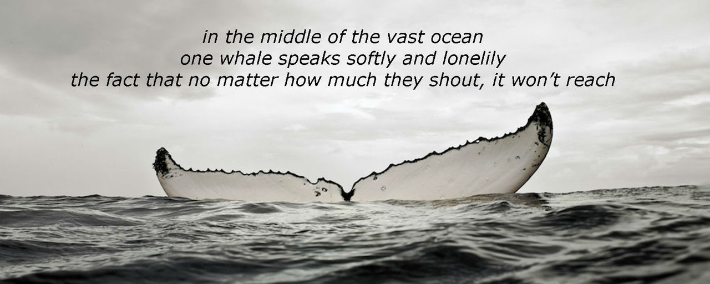

Mungkin dari kalian masih banyak yang belum mengetahui tentang fenomena ini kali yaa. Yaps, betul, the loneliest 52 Hz Whale. Pertama kali aku tahu tentang fenomena paus paling kesepian di dunia itu ya dari sebuah lirik lagu. Judulnya Whalien 52 yang dinyanyikan oleh grup band Korea Selatan, yaitu BTS atau Bangtan Sonyeondan. Nah dari judul lagunya aja udah bikin penasaran banget sih, kira-kira akronim dari apa sih Whalien 52 itu. Setelah aku cari tahu, browsing, baca artikel dan postingan di media sosial, ternyata Whalien 52 ini singkatan dari Whale-Alien 52 Hz. Nah dari sini aku mulai kepo nih tentang fenomena paus ini lebih lanjut.

Jadi fenomena yang langka ini itu berawal dari penemuan seorang peneliti biota laut bernama Dr. William Watkins dari Oceanographic Institution Woods Hole pada tahun 1989 yang kala itu sedang melakukan penelitian tentang siklus perkawinan sekelompok paus bongkok dan paus biru di Samudera Pasifik. Mulai dari sini lah Dr. Watkins menemukan sinyal frekuensi yang berasal dari seekor paus jantan yang menghasilkan frekuensi 52 Hz. Dimana pada frekuensi ini suaranya hanya dapat ditangkap/didengar oleh radio sonar kapal laut dan kapal selam. Oleh karena itu, paus-paus lainnya tidak dapat menangkap suara atau frekuensi yang dihasilkan dari Whale 52 ini. Akibatnya apa? Ya, Whale 52 ini jadi sendirian di laut lepas tanpa kawanan/gerombolan paus lainnya. Karena secara ilmiah, paus hidup di laut dengan cara bergerombol/berkelompok. Hal inilah yang menyebabkan paus ini disebut sebagai The Loneliest Whale in The World. Okee, segitu aja ya gaess ceita kali ini, see you next time. Bye-byeeee >_<